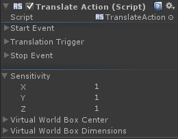

Translation Action |
Top Previous Next |
|
The Translation Action changes the position of the game object according to the corresponding changes in the tracked object position. The Translation Action is a Continuous Action thus you can define its start/process/stop events, as described in Continuous Actions. See additionally the section for details on the action triggers. You can set the Sensitivity parameters for each axis. The parameters configure how fast or slow the object moves with respect to the movement of the tracked object. Inserting a negative value causes the movement to flip in the corresponding axis. This action has the same Virtual World Box parameters as the Tracking Action, described in Tracking Action.
|